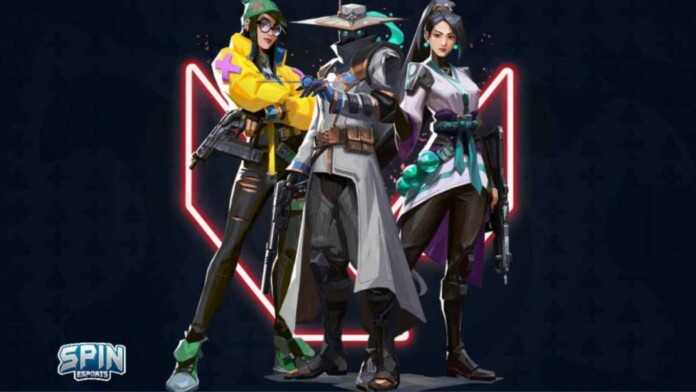

There are 4 different types of valorant agents which are Duelist, initiator, controller, and sentinel. Duelists are agents that are self-sufficent agents that are used to be aggressive and can hopefully get an opening pick. Initiators are used to challenge corners, get information, and push the other team away. Controllers are used to slice up the map for ease of rotation, as well as the ability to blind and stun the enemy. Sentinels are used to be defensive and can lock down areas.
| Type of Agent | How many in a Team | Newest Agent |
|---|---|---|
| Duelist | 2 | Neon |
| Initiator | 1 | Fade |
| Controller | 1 | Astra |
| Sentinel | 1 | Chamber |
Duelists
There are 6 duelists avalible to pick in the game. They are called Raze, Jett, Yoru, Neon, Reyna, and Phoenix. All of them but Phoenix have an ability that enahces there movement. Reyna and Phoenix have the ability to heal themselves. Yoru has the an ability to teloport and Raze has expolsives. Duelist are meant to be played at a fast pace and will suffer if not utilised as such. Raze, Reyna and Jett will have there abilitys recharge after getting two eliminations. There will normally be two duelists on a team.
Initiators

With 5 initiators and Fade as the newest, they are Sova, Breach, Skay, KAY/O, and Fade. Sova and Fade's abilities aire more on the side of getting the positions of the oposing players while Sky and KAY/O are based on getting the genral area of them, and Breach is made to deter and stun the enemys. Sky and Fade have a similar ability were they spawn a player seeking thing blinds and stuns the player it hits. There will normally only be one initiator used in a team but other than duelists they are the only other type of agents that teams use two of.
Controllers

Brimstone, Viper, Omen, and Astra make up the controllers of the Valorant protocal. Brimstone and Astra will have a birds eye view of the map to place down there smokes that will block both teams lign of sight. Viper has a throwable grenade for her smoke as well as a wall of poison. Omen's smoke slides along the horizonal axis in the direction that he is looking.
Sentinels

The sentinels of Valorant are Kill Joy, Cypher, Chamber, and Sage. They are all very different yet have the same purpose. Sage can heal herself and her team and has a wall of ice that can be used to block paths and get to tricky spots. Cypher has tripwires and a camera that he uses to pin point the enemy. Chamber has the ability to teloport and pull out a pew pew that is very much like the sheriff. Kill Joy has a turret and a little robot that makes the opposing team vulnerable.